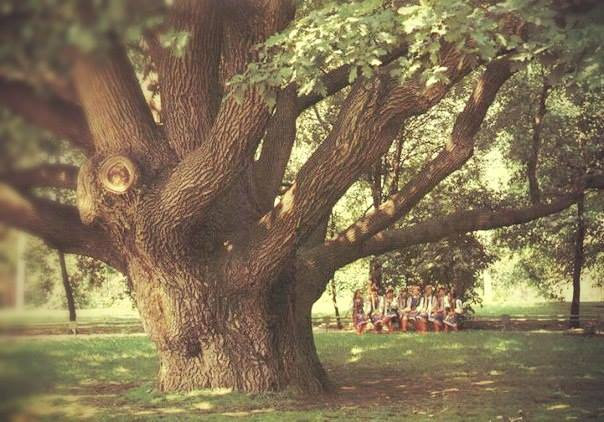

Вступ
Західна Україна — регіон з багатою історією та культурною спадщиною, який охоплює такі області,як Львівська, Івано-Франківська, Тернопільська, Закарпатська, Волинська, Рівненська та Чернівецька. Завдяки своєму географічному розташуванню, цей край став місцем перетину різних культур, традицій та історичних подій.

(джерело)
Історичний розвиток
Західна Україна має глибокі історичні корені, що сягають часів Київської Русі. У період середньовіччя ці землі входили до складу різних державних утворень, зокрема Галицько-Волинського князівства, Великого князівства Литовського, Речі Посполитої та Австро-Угорської імперії. Така різноманітність впливів сприяла формуванню унікального культурного та архітектурного обличчя регіону.
(джерело)
Культурна спадщина
Західна Україна відома своєю багатою культурною спадщиною. Львів, зокрема, славиться своєю архітектурою, що поєднує готичний, ренесансний та бароковий стилі. Місто внесене до списку Всесвітньої спадщини ЮНЕСКО. Крім того, в регіоні збереглися численні замки, палаци та фортеці, які є свідками бурхливого минулого цих земель.
Цікаві факти про Західну Україну
-
Географічний центр Європи
У Закарпатській області, поблизу села Ділове, розташований знак, що вказує на географічний центр Європи. Це місце стало популярною туристичною атракцією та символом європейської єдності.

(джерело) -
Найдовший музичний інструмент
У Карпатах поширена трембіта — дерев'яний духовий інструмент довжиною до 4 метрів. Вона використовується пастухами для спілкування на великих відстанях та є невід'ємною частиною гуцульської культури.
(джерело) -
Найстаріший дуб України
В урочищі Юзефін Рівненської області росте дуб, вік якого оцінюється в понад 1300 років.

Це одне з найстаріших дерев країни, що стало свідком багатьох історичних подій
(джерело) -
Унікальні природні явища
Поблизу Нікополя можна знайти "співучі" піски, які видають звуки при русі по них. Це рідкісне природне явище приваблює дослідників та туристів.
(джерело) -
Бурштин із давніми включеннями
На Рівненщині знаходять бурштинові зразки з включеннями стародавніх комах, таких як скорпіони, що дозволяє вченим вивчати фауну минулих епох.
(джерело) -
Найглибше озеро
Озеро Синевир, розташоване в Карпатах, є найбільшим та найглибшим гірським озером України. Його глибина сягає 24 метрів, а вода відзначається кришталевою чистотою.
(джерело) -
Місто Лева
Львів називають "містом Лева" не лише через назву, але й через велику кількість скульптур левів, які прикрашають вулиці, площі та будівлі міста.
(джерело)
Висновок
Західна Україна — це край з унікальним поєднанням історії, культури та природних чудес. Її багатогранність робить її привабливою для туристів та дослідників, які прагнуть зануритися в атмосферу старовинних міст, насолодитися краєвидами Карпат та відкрити для себе численні цікаві факти, що приховують ці землі.
Ecobazar
Maecenas lacinia felis nec placerat sollicitudin. Quisque placerat dolor at scelerisque imperdiet. Phasellus tristique felis dolor.
Maecenas elementum in risus sed condimentum. Duis convallis ante ac tempus maximus. Fusce malesuada sed velit ut dictum. Morbi faucibus vitae orci at euismod. Integer auctor augue in erat vehicula, quis fermentum ex finibus.
Mauris pretium elit a dui pulvinar, in ornare sapien euismod. Nullam interdum nisl ante, id feugiat quam euismod commodo. Sed ultrices lectus ut iaculis rhoncus. Aenean non dignissim justo, at fermentum turpis. Sed molestie, ligula ut molestie ultrices, tellus ligula viverra neque, malesuada consectetur diam sapien volutpat risus. Quisque eget tortor lobortis, facilisis metus eu, elementum est. Nunc sit amet erat quis ex convallis suscipit. ur ridiculus mus.